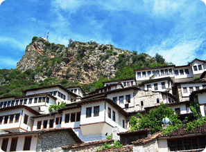

Historia duhet të ketë përqendruar këtu drama dhe tragjedi. Berati është një ndër qytetet e rrallë, i cili i takon agimit të njerëzimit. Një kohë, kur ujrat rridhnin të pakontrolluara dhe shkatërruese, në këtë zonë u krijua një masiv shkëmbi, i zbuluar nga natyra në sajë të këtij lumi, i cili duket të jetë vënë posaçërisht për të mirëpritur një qytet, ku jeta filloi të organizohej për më shumë se 2400 vite. Ky qytet, rezultat i fantazisë së rafinuar, tërhoqi poetët të shkruajnë dhe piktorët të pikturojnë. Njihet ndryshe dhe si qyteti i një mbi një dritareve ,i cili është i renditur i nëntë për nga popullsia në Republikën e Shqipërisë me një popullsi prej, 69.000 banorë. Është qendra e Qarkut të Beratit. Gjendet në jugun e vendit, 70 km në vijë ajrore në jug të Tiranës, përshkohet nga lumi Osum dhe rrethohet nga kodra dhe male, ku spikat Tomorri, i deklaruar park kombëtar.
Çfarë na ofron sot qyteti?!

Përveç bukurisë dhe rëndësisë së dikurshme Berati, vazhdon të jetë i tillë dhe sot. Qyteti që prej 2008-s është pjesë e UNESCO-s duke u bërë kështu një pasuri ndërkombëtare. Mangalemi
Kompleksi i lagjes «Mangalem» është gur i çmuar në artin e ndërtimeve, në të cilën kompozimi harmonik i shtëpive ka arritur një nivel të lartë. Ka formën e një piramide elegante që imiton siluetën e kodrës, në majën e së cilës është ngritur kështjella. Ky kompozim, kaq i madh në volum aq sa delikat në kompozimin e saj, karakterizohet nga një transparencë intensive për shkak të numrit të madh të dritareve, nga e cila merr emrin «qyteti i një mijë e një dritareve». Vizitorit i tërheqin vëmendjen rrugicat, të cilat edhe pse janë të «fshehura» kanë një bukuri të jashtëzakonshme. Shumë intime, me errësirën e tyre këto rrugica duket sikur sfumojnë godinat e lagjes. Rrugica si këto nuk mund të harrohen me lehtësi.
Në vitin 1961 Berati u shpall zyrtarisht qytet muze , me pasuri të konsiderueshme monumentesh dhe me vlera të larmishme për nga gjinitë, të cilat përbëjnë një dëshmi të trashëgimisë kulturore, historike e artistike, të jetës e të punës, të realizuara mjeshtërisht brez pas brezi nga banorët e tij.
Nga zonifikimi dhe nga përcaktimi i kategorisë së monumenteve qyteti ndahet në tri zona : zona muze, zona e mbrojtur dhe zona e lirë.
Sot Berati trashëgon 210 objekte muzeale, nga të cilat 150 janë objekte në këmbë. Prej tyre 60 janë monumente të kategorisë së parë dhe të tjerat të kategorisë së dytë.